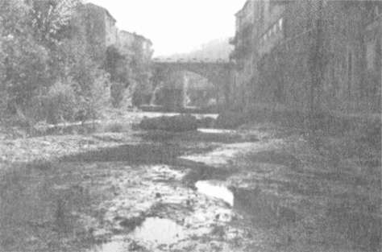

Margueıite Vernier yanında General Georges Dıı Pont ile birlikte Cambon ve Saint-Honore caddelerinin köşesinde faytondan indi. Kavalyesi faytoncunun ücretini öderken, Marguerite akşam 658
Tapmak
serinliğine karşı etolüne biraz daha sıkı sarındı ve memnuniyetle gülümsedi. Ünlü pencereleri en ince Britanya dantelinden perdelerle örtülmüş Voisin, kentin en iyi lokantasıydı. Buraya getirmesi du Pont'un ona olan ilgisinin arttığını gösteriyordu.
1870 yılındaki açlık sırasında, Fransız kralcılar ve Prusya ordusunun işbirliğiyle Parisli Komüncüler kuşatıldığında "kentin en iyi lokantası"
olan Voisin'in mönüsünde fil çorbası, ayı kaburgası ve kanguru güveci gibi hayvanat bahçesinden "özgürlüğüne kavuşturulan" hayvanların eti bulunuyordu. Günümüzde ise bu kavşakta yemek yenecek tek yer Polonya kilisesinin aşevidir.
Cambon ve Saint-Honore sokaklarının köşesinden güneye doğru biraz yürüyünce Rivoli Sokağı'ndan, Tuileries Bahçeleri'nin korkuluklarını izleyerek Concorde Meydam'na ulaşabilirsiniz. Buradan metroya binip Montparnasse Garı'ndan tıpkı Leonie ile Anatole gibi güneye, Rennes-les-Bains'e kaçabilirsiniz.
659

RENNES-LES-BAİNS
OO